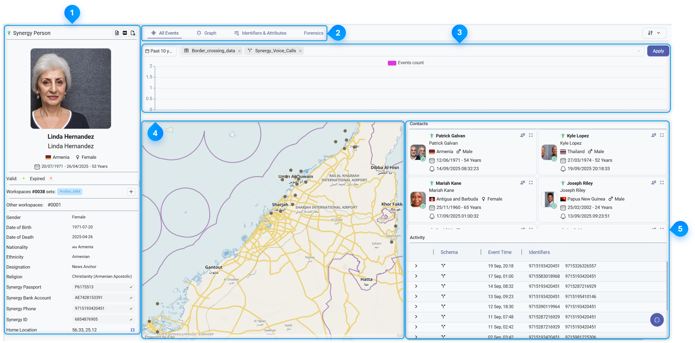

Viewing and Analyzing Profiles
- Log in to Synergy.
- From the Open Workspace drop-down, select the relevant workspace. All available workspace components are displayed.
- Mouse over Toolsand click Profile Search. The New Profile Search tab is displayed.
- On the tab, in the Profile search pane, enter your search query. For more information, see Searching for Profiles.
- Click the Profile Card of the Profile. The Profile Details pop-up for the Profile is displayed.
Tip: To view the Profile Details in a new tab, on the Profile Card, click Open in tab.
The following image illustrates the different sections and widgets available on a Profile Details pop-up:

This image is for illustrative purposes only and does not represent real data.
The following table explains the different sections of a Profile:
| # | Section | Description | |||||||||||||||
|---|---|---|---|---|---|---|---|---|---|---|---|---|---|---|---|---|---|
| Summary |
Displays all the personal data available for the Profile. This includes the following data:
|
||||||||||||||||
| Widgets |
Enable you to perform investigations, conduct in-depth analysis of search results, and explore details. The following widgets are available in the Profile details pop-up:
|
||||||||||||||||
| Histogram |
Displays a bar graph that indicates the filtered events occurred during a specified timeframe. |
||||||||||||||||
| Map |
Displays location markers at different geolocation points. Markers represent individual records that contain geolocation data on the map. To view the summary of the data that a marker represents in a tooltip, click the marker. |
||||||||||||||||
| Contacts and Activity |
|